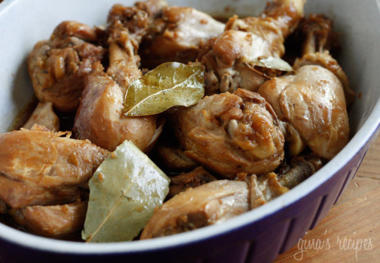

Filipino Adobe Recipe
Adobo is a classic Filipino dish (one that I loved during my childhood and now). Its key ingredients are the chicken, soy sauce, vinegar, and peppercorns.
Ingredients
- Soy sauce
- Vinegar
- Garlic
- Peppercorns
- Bay Leaves
- Jalapeno
- Water
- Chicken Pieces
Steps
- Marinate chicken in vinegar, soy sauce, garlic, jalapeño and pepper, for at least an hour (overnight is ideal).
- Put chicken, 1/2 cup water, bay leaves and marinade into a deep nonstick skillet and cook on medium-low heat. Cover and cook until the meat is tender, about 45 minutes.
- Remove the cover and cook an additional 15 minutes, until the sauce reduces.
- Discard bay leaves and serve over rice if you wish.
